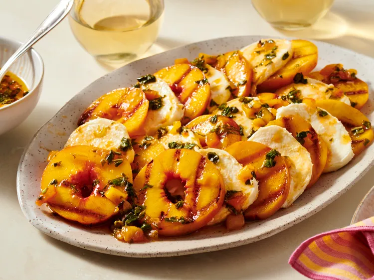

Grilled-Peach-and-Mozzarella-Salad
Homepage

Description
This grilled peach and mozzarella salad is absolutely divine. Grilled, lightly caramelized peach slices are layered with fresh mozzarella and drizzled with a fresh peach, lime, and basil glaze for a bright, sweet-and-savory summer dish.
Ingredients
- 4 large firm fresh peaches, or up to 6 peaches if small
- 1 pound pre-sliced fresh mozzarella
- 1/3 cup olive oil
- 3 tablespoons brown sugar
- 2 tablespoons whiskey
- 2 tablespoons Sriracha hot sauce
- 1 lime, juiced
- 1/4 cup chopped fresh basil
- 1 teaspoon lime zest
- cooking spray
Steps
- Cut the ends off peaches, then cut peaches horizontally into 1/4-inch-thick rounds, cutting inward until you reach the pit (like a donut shape). Turn peach to the opposite end and repeat.
- Dice end pieces to yield 1 cup fresh peaches. Add diced peaches, olive oil, brown sugar, whiskey, sriracha, and lime juice to a small saucepan. Stirring constantly, bring just to a gentle boil. Remove from heat, stir in basil and lime zest, and allow to cool for 3 to 5 minutes.
- Spray a grill pan with cooking spray; set over medium-high heat. Brush peach rounds with peach mixture.
- Place peach rounds in the grill pan just long enough to caramelize a little and get good grill marks, 2 to 3 minutes per side.
- On a platter, lay peach slices alternately with mozzarella slices, like shingles. Drizzle with remaining peach glaze and serve.